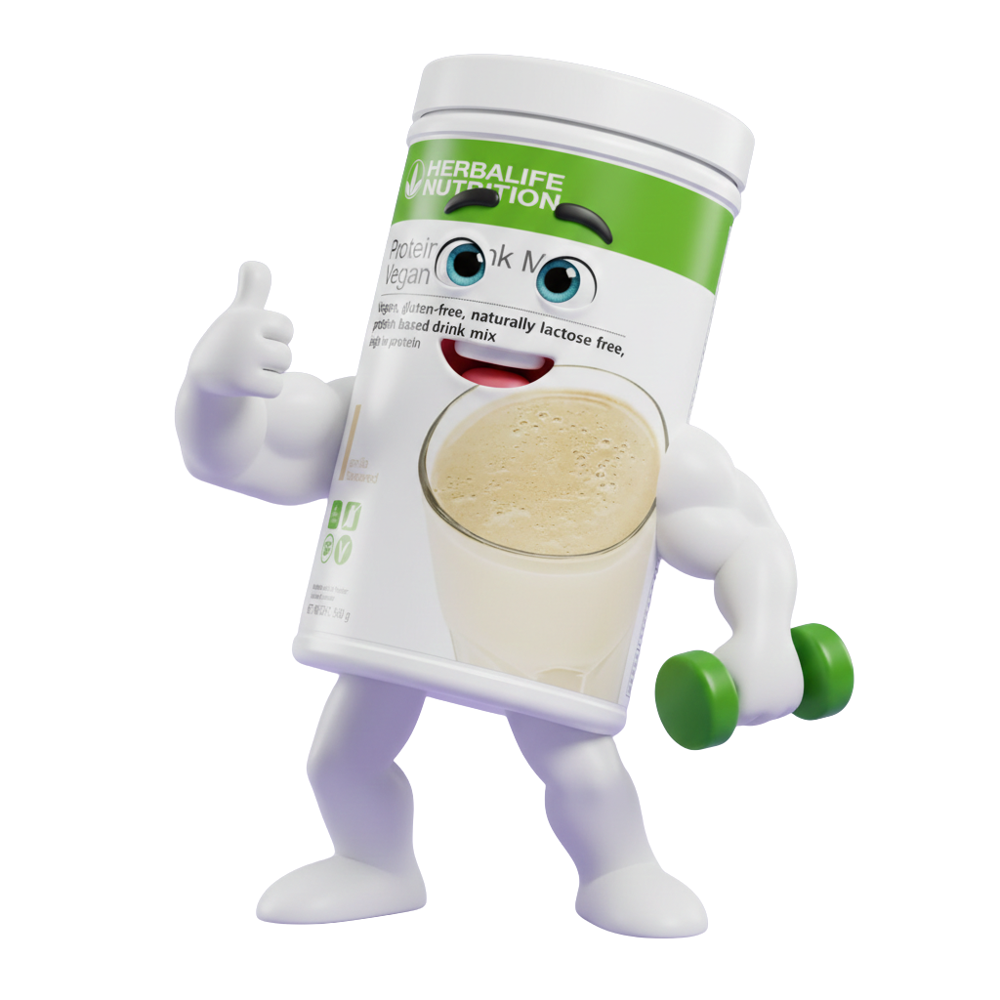
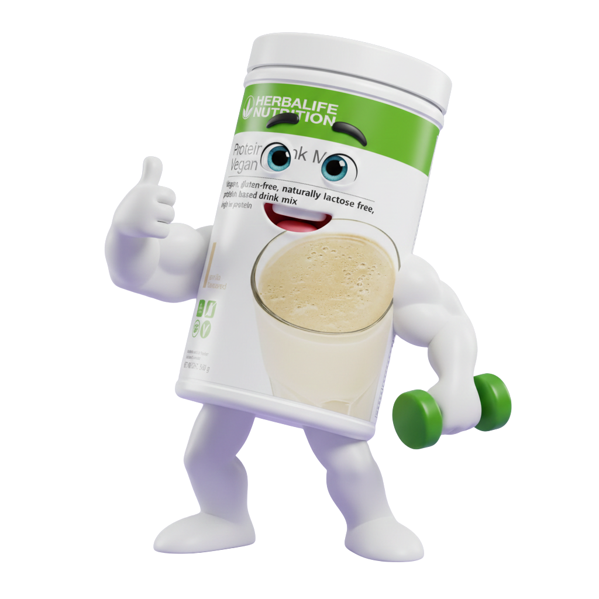

La Colazione Equilibrata
1. Idratazione (Aloe)
3 TAPPINI in un bicchiere d'acqua.
(Conservare in frigo dopo l'apertura)
2. Energia (Infuso)
½ CUCCHIAINO in una tazza di acqua calda o in una bottiglia da 1,5 litri.
 

3. Nutrizione (F1 + PDM)
2 Cucchiai F1 + 2 Cucchiai PDM
in 250ml di acqua o bevanda vegetale.
Scegli il tuo liquido:
- • Acqua o Bevanda di Soia / Avena / Riso
- • Succo di frutta non zuccherato
- • Yogurt magro
"La quantità di liquido può essere modificata a piacere se si vuole ottenere un pasto più o meno denso."
⚠️ ATTENZIONE AL LATTE VACCINO:
Mezzo litro di latte al giorno (250cc per volta) potrebbe dare problemi intestinali o di digeribilità a chi non è abituato.
🌡️ TEMPERATURA:
I liquidi possono essere freddi o tiepidi, ma non caldi (le alte temperature eliminano i nutrienti).
⚖️ Per Perdere Peso
Sostituisci 2 pasti al giorno con il frullato:
• La COLAZIONE
• Un PASTO PRINCIPALE (Pranzo o Cena)
💪 Per Acquisire Massa Magra
Consuma 3 volte al giorno:
• La COLAZIONE + 2 frullati aggiuntivi (1 ora dopo i pasti principali).
Snack e Pomeriggio
Proteine e idratazione: fondamentali per non arrivare affamati a cena.
Opzioni Snack Sani:
- ✔️ Barretta proteica Herbalife
- ✔️ Formaggio grana o Crackers integrali
- ✔️ Frutta fresca o secca (mandorle)
- ✔️ Yogurt greco magro o di soia
- ✔️ Noccioline di soia tostate
Idratazione
2L Acqua al giorno
Attività
Esercizio Fisico
Qualità
Piatto Equilibrato
Cambiamento
Piccole Abitudini